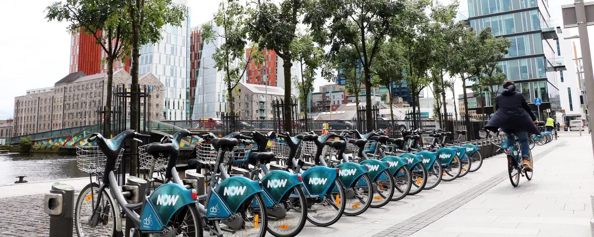

Cycling in Dublin
SDG 11 - Sustainable Cities SDG 13 - Climate ActionCycling is one of the most sustainable forms of transport available. It produces zero carbon emissions, reduces traffic congestion, and improves public health. Dublin has invested significantly in cycling infrastructure over the past decade, and the number of cyclists using the city's roads continues to grow year on year.

The Dublin Bikes Scheme
Dublin Bikes is a public bicycle-sharing scheme operated by JCDecaux in partnership with Dublin City Council. Launched in 2009, it was one of the first large-scale bike-sharing schemes in Ireland. Users can pick up a bike from any station and return it to any other station across the city.
How It Works
- Register online at dublinbikes.ie or at any station terminal.
- Purchase a 1-day, 3-day, or annual subscription.
- Use your card or PIN to release a bike from any docking station.
- First 30 minutes of each journey are free with an annual subscription.
- Return the bike to any available docking point in the network.
The scheme has been so successful that it has expanded several times since launch, with stations now covering the city centre, the docklands, and the south inner city.
Dublin Cycling Infrastructure - Key Statistics
| Metric | 2015 | 2019 | 2023 |
|---|---|---|---|
| Daily cyclists (Grand Canal cordon) | 9,450 | 11,200 | 13,500 |
| Protected cycle lane km (Dublin City) | 40 km | 65 km | 120 km |
| Dublin Bikes annual trips | 1.8 million | 2.9 million | 3.5 million |
| CO₂ saved vs car (tonnes / year) | ~820 t | ~1,340 t | ~1,800 t |
Sources: National Transport Authority (NTA), Dublin City Council 2023.
Key Cycling Projects in Dublin
Dodder Greenway
A 9 km off-road cycling and walking route along the River Dodder from Ringsend to Firhouse, connecting south Dublin suburbs to the city centre safely.
Strand Road Protected Lane
One of Dublin's most debated infrastructure projects, providing a fully protected cycle lane along the coast from Sandymount to Booterstown.
BusConnects Cycling Network Plan
A €2 billion plan to deliver 200 km of protected cycle lanes across Dublin by 2027, funded under the National Development Plan.
Benefits of Cycling for Dublin
- Zero emissions: Cycling produces no CO₂ or air pollutants during the journey.
- Reduced congestion: Each cyclist removes one car from Dublin's already congested roads.
- Health benefits: Regular cycling reduces the risk of cardiovascular disease and improves mental health.
- Cost savings: Cycling costs a fraction of the price of owning and running a car in the city.
- Faster in city centre: At peak times, cycling is often faster than driving across Dublin city centre.